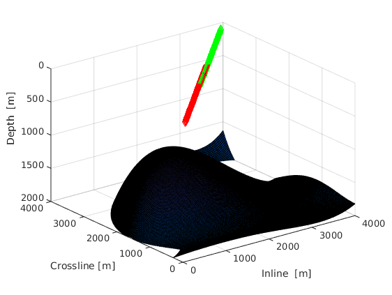

Figure 313
Check interpretation of coefficients in anisotropic CRS formula
Author: Abakumov Ivan Publication date: 31st August 2016
Contents
Define working folder, add links to Library and SeisLab
clear; close all; clc; mlibfolder = '/home/zmaw/u250128/Desktop/MLIB'; path(path, mlibfolder); addmypath;
Introduction
% Note: % Accuracy of traveltime 10e-12 % Accuracy of attributes 10e-10 for model = 64:64
acquisition = 2;
Get model parameters
Get_model_parameters;
Get acquisition geometry
Get_model_acquisition_geometry;
Plot acquisition geometry
figure(1)
[XX, YY] = meshgrid(G.xx, G.yy);
[ZZ, ind] = Get_model_surface(XX,YY,model);
surf(XX,YY,ZZ);
hold on
plot3(Xs(1,:),Xs(2,:),Xs(3,:), 'rv');
plot3(Xg(1,:),Xg(2,:),Xg(3,:), 'g^');
plot3(X0(1),X0(2),X0(3), 'b*');
axis([G.x0, G.mx, G.y0, G.my, G.z0, G.mz]);
xlabel('Inline [m]');
ylabel('Crossline [m]');
zlabel('Depth [m]');
view(3);
set(gca, 'ZDir', 'reverse')
 Find stacking parameters
w3, M3 and N3 are stacking parameters. They could be transformed to wavefield attributes
- V - phase velocity
- alpha, beta - phase angles
- theta, phi - group angles
isotropic homogeneous overburden:
model = 61;
[ t0, w3, M3, N3 ] = Get_model_stacking_parameters( X0, model );
v0 = 2/norm(w3);
[ alpha, beta, KNIP, KN ] = my_A3P(v0, w3, M3, N3);
KNIP = KNIP
KN = KN
% % either take (x,y) components and find wavefield attributes:
% % (reality)
% w = w3(1:2, 1);
% N = N3(1:2, 1:2);
% M = M3(1:2, 1:2);
% %[ alpha, beta, KNIP, KN ] = my_A2P(v0, w, M, N);
% or find wavefield attributes and make from them stacking parameters:
% (theory)
% [ alpha, beta, KNIP3, KN3 ] = my_A3P(v0, w3, M3, N3);
% KNIP = KNIP3(1:2,1:2);
% KN = KN3 (1:2,1:2);
% [ w, M, N ] = my_P2A(v0, alpha, beta, KNIP, KN);
%
% %% Exact traveltimes
%
% % download exact traveltimes
% tti_ex = MLD([mlibfolder '/CRS/models/model_' num2str(model) '_traveltimes_for_acq_' num2str(acquisition) '.mat']);
%
% % or calculation exact traveltimes again
%
% % tic
% % tti_ex = Get_model_exact_traveltime(Xs, Xg, model);
% % toc
% % save([mlibfolder '/CRS/models/model_' num2str(model) '_traveltimes_for_acq_' num2str(acquisition) '.mat'], 'tti_ex');
%
% %% Traveltime approximations
%
% HH = (Xg(1:2, :) - Xs(1:2,:))/2;
% MM = (Xg(1:2, :) + Xs(1:2,:))/2;
% MM(1,:) = MM(1,:) - X0(1);
% MM(2,:) = MM(2,:) - X0(2);
%
% %% temp
% % prepare parameters for cpp functions
% hx = HH(1,:);
% hy = HH(2,:);
% mx = MM(1,:);
% my = MM(2,:);
% hxhx = hx.*hx;
% hxhy = hx.*hy;
% hyhy = hy.*hy;
% mxmx = mx.*mx;
% mxmy = mx.*my;
% mymy = my.*my;
%
% attr(1,1) = w(1);
% attr(2,1) = w(2);
% attr(3,1) = M(1,1);
% attr(4,1) = M(1,2);
% attr(5,1) = M(2,2);
% attr(6,1) = N(1,1);
% attr(7,1) = N(1,2);
% attr(8,1) = N(2,2);
% attr(9,1) = t0;
% attr(10,1) = v0;
%
% %%
% tic
% %tti_crs = Get_traveltime_3D_CRS (MM, HH, t0, w, M, N);
% tti_crs = Get_traveltime_3D_CRS_cpp(attr,mx,my, hx, hy, mxmx, mxmy, mymy, hxhx, hxhy, hyhy);
% ctime.crs = toc;
% %
% tic
% %tti_dsr = Get_traveltime_3D_DSR (MM, HH, t0, w, M, N);
% tti_dsr = Get_traveltime_3D_DSR_cpp(attr,mx,my, hx, hy, mxmx, mxmy, mymy, hxhx, hxhy, hyhy);
% ctime.dsr = toc;
% %
% tic
% %tti_ncrs = Get_traveltime_3D_nCRS(MM, HH, t0, w, M, N);
% tti_ncrs = Get_traveltime_3D_nCRS_cpp(attr,mx,my, hx, hy, mxmx, mxmy, mymy, hxhx, hxhy, hyhy);
% ctime.ncrs = toc;
% %
% tic
% tti_icrs_par_LIA = Get_traveltime_3D_iCRS_par_LIA(MM, HH, t0, w, M, N, 3);
% ctime.icrs_par_LIA = toc;
% %
% tic
% tti_icrs_el_LIA = Get_traveltime_3D_iCRS_el_LIA(MM, HH, t0, v0, w, M, N, 3);
% ctime.icrs_el_LIA = toc;
% %
% tic
% tti_icrs_el_TIA = Get_traveltime_3D_iCRS_el_TIA(MM, HH, t0, v0, w, M, N, 3);
% ctime.icrs_el_TIA = toc;
%
%
%
% ctime.crs = ctime.crs/ctime.ncrs;
% ctime.dsr = ctime.dsr/ctime.ncrs;
% ctime.icrs_el_LIA = ctime.icrs_el_LIA/ctime.ncrs;
% ctime.icrs_el_TIA = ctime.icrs_el_TIA/ctime.ncrs;
% ctime.icrs_par_LIA = ctime.icrs_par_LIA/ctime.ncrs;
% ctime.ncrs = 1;
%
KNIP =
1.0e-03 *
0.8573 0.0000 0.0000
0.0000 0.8573 0.0000
0.0000 0.0000 -0.0000
KN =
1.0e-03 *
0.3485 -0.0077 -0.0000
-0.0077 0.3873 -0.0000
0.0000 -0.0000 0.0000
end % % %% % texac = reshape(tti_ex,81,41); % tcrs = reshape(tti_crs,81,41); % tncrs = reshape(tti_ncrs,81,41); % tdsr = reshape(tti_dsr,81,41); % ticrs1 = reshape(tti_icrs_par_LIA(end,:),81,41); % ticrs2 = reshape(tti_icrs_el_LIA(end,:),81,41); % ticrs3 = reshape(tti_icrs_el_TIA(end,:),81,41); % % m = -500:25:500; % h = 0:25:2000; % % figure(1) % suptitle('Relative errors') % % % subplot(3,2,1) % data = (tcrs - texac)./texac*100; % imagesc(h,m',flipud(data')) % xlabel('h [m]'); % ylabel('m [m]'); % title('CRS') % colorbar % colormap('Jet'); % caxis([-2 2]) % hold on % contour(h,m',flipud(data'),'color','k','ShowText','on') % c = colorbar('Ticks', [-2,-1 0, 1, 2]); % c.Label.String = 'Error %'; % % subplot(3,2,3) % data = (tdsr - texac)./texac*100; % imagesc(h,m',flipud(data')) % xlabel('h [m]'); % ylabel('m [m]'); % title('DSR') % colorbar % colormap('Jet'); % caxis([-2 2]) % hold on % contour(h,m',flipud(data'),'color','k','ShowText','on') % c = colorbar('Ticks', [-2,-1 0, 1, 2]); % c.Label.String = 'Error %'; % % subplot(3,2,5) % data = (tncrs - texac)./texac*100; % imagesc(h,m',flipud(data')) % xlabel('h [m]'); % ylabel('m [m]'); % title('n-CRS') % colorbar % colormap('Jet'); % caxis([-2 2]) % hold on % contour(h,m',flipud(data'),'color','k','ShowText','on') % c = colorbar('Ticks', [-2,-1 0, 1, 2]); % c.Label.String = 'Error %'; % % subplot(3,2,2) % data = (ticrs1 - texac)./texac*100; % imagesc(h,m',flipud(data')) % xlabel('h [m]'); % ylabel('m [m]'); % title('i-CRS, LIA (paraboloid)') % colorbar % colormap('Jet'); % caxis([-2 2]) % hold on % contour(h,m',flipud(data'),'color','k','ShowText','on') % c = colorbar('Ticks', [-2,-1 0, 1, 2]); % c.Label.String = 'Error %'; % % subplot(3,2,4) % data = (ticrs2 - texac)./texac*100; % imagesc(h,m',flipud(data')) % xlabel('h [m]'); % ylabel('m [m]'); % title('i-CRS, LIA (ellipsoid)') % colorbar % colormap('Jet'); % caxis([-2 2]) % hold on % contour(h,m',flipud(data'),'color','k','ShowText','on') % c = colorbar('Ticks', [-2,-1 0, 1, 2]); % c.Label.String = 'Error %'; % % % subplot(3,2,6) % data = (ticrs3 - texac)./texac*100; % imagesc(h,m',flipud(data')) % xlabel('h [m]'); % ylabel('m [m]'); % title('i-CRS, TIA (ellipsoid)') % colorbar % colormap('Jet'); % caxis([-2 2]) % hold on % contour(h,m',flipud(data'),'color','k','ShowText','on') % c = colorbar('Ticks', [-2,-1 0, 1, 2]); % c.Label.String = 'Error %';